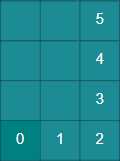

マンハッタン距離概要  マンハッタン距離は距離の計算方法の一つで、軸ごとに差の絶対値の距離を測り、その距離の総和を求める。 コード例 function manhattanDistance( x1: number, y1: number, x2: number, y2: number ): number { return Math.abs(x1 - x2) + Math.abs(y1 - y2); } 内部で利用しているアルゴリズム 絶対値, 2 点間の直線距離 関連記事 チェス盤距離